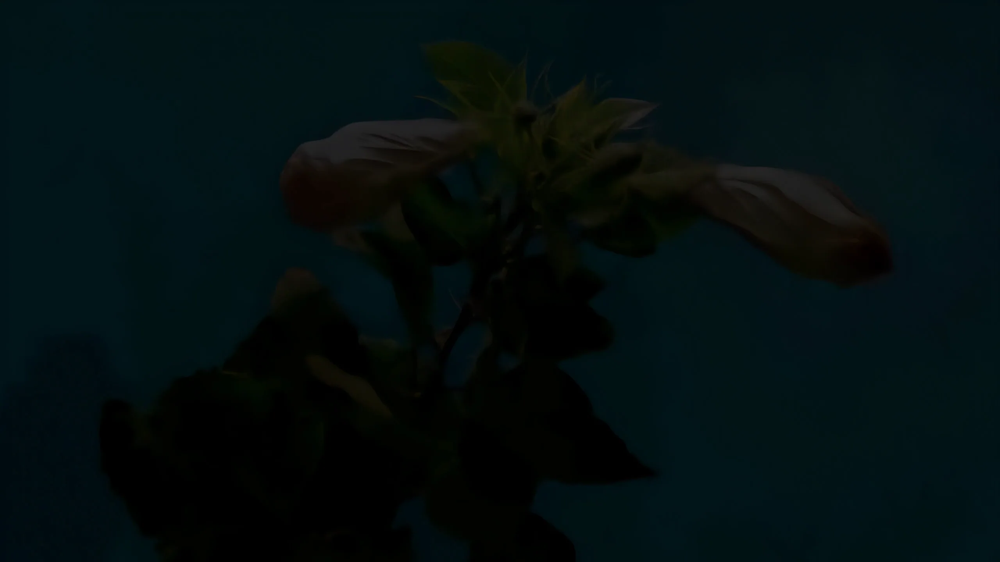

| 제원 항목 | 01. Receiver (1880s) |
02. Headphones (1910s) |
03. Walkman (1979) |
04. MDR-E252 (1982) |
05. iPhone (2007) |
06. AirPods (2016) |
|---|---|---|---|---|---|---|
| 대표 모델명 | Bell Bipolar Receiver | Baldwin Type C | Sony TPS-L2 | Sony MDR-E252 | Apple iPhone (1st Gen) | Apple AirPods (A1523) |
| 본체 질량 | 약 450g (한 손 파지) | 약 340g (강철 헤드밴드) | 390g + 45g 경량 헤드폰 | 약 12g (케이블 포함) | 135g (본체) + 유선 이어폰 | 유닛당 4.0g (케이스 38g) |
| 음향 변환기 | 연철 진동판 · 막대 자석 | 비자성 운모(Mica) 진동판 | 45g 오픈형 다이나믹 드라이버 | 16mm 사마륨 코발트 드라이버 | 15mm 다이내믹 이어버드 | 커스텀 고편위 다이나믹 드라이버 |
| 임피던스 / 전송 | 약 75Ω · 교환국 유선 직결 | 1,200~1,500Ω · 유선 2핀 | 32Ω · 3.5mm 아날로그 스테레오 | 16Ω · 3.5mm 스테레오 플러그 | 32Ω · 3.5mm 4극 TRRS 단자 | Bluetooth 4.2 · Apple W1 칩 |
| 전원 / 구동 시간 | 무전원 (전화선 전류 구동) | 무전원 (패시브 전파 구동) | AA 건전지 2개 (약 8시간) | 무전원 (플레이어 출력 구동) | 1,400mAh 내장 리튬이온 | 내장 리튬이온 (5h / 케이스 24h) |